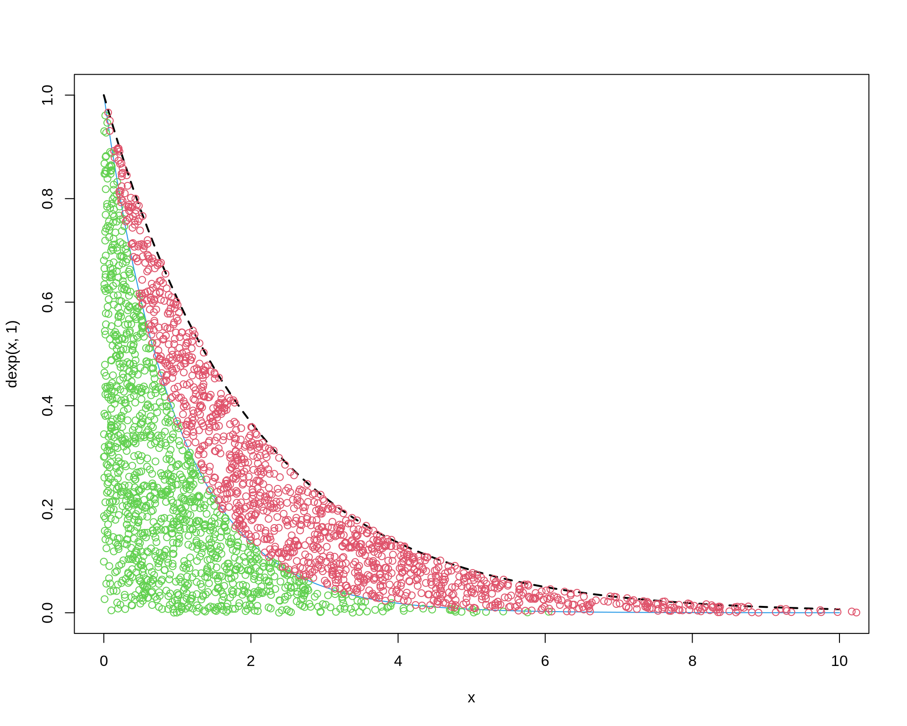
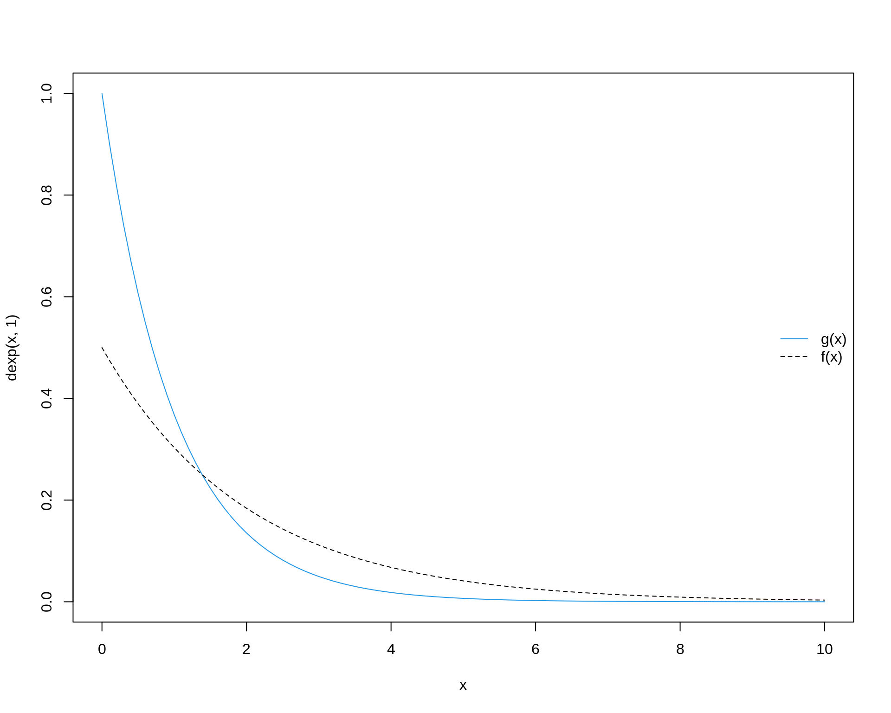
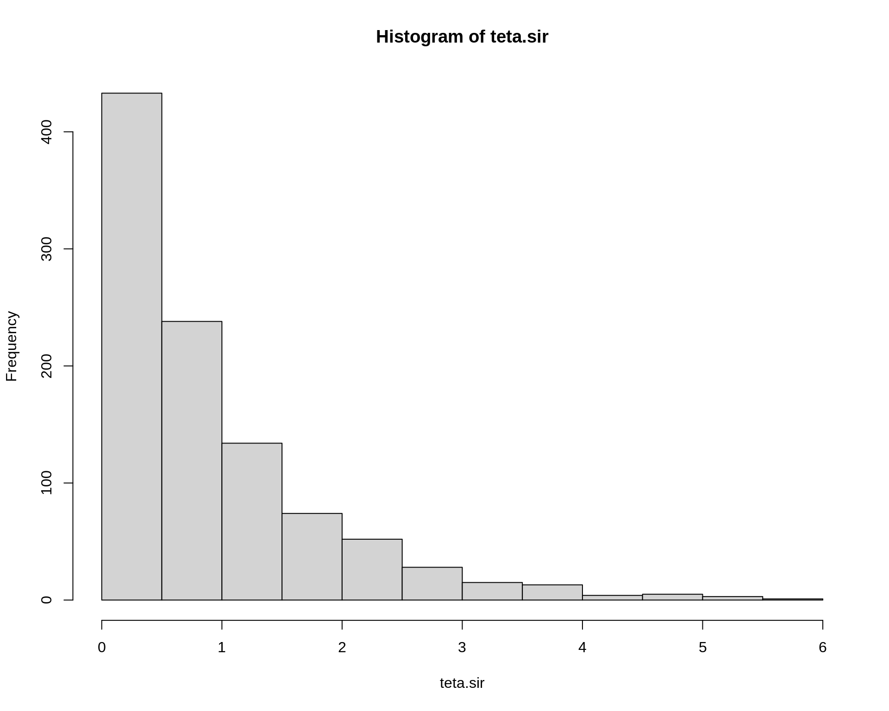

Métodos de Monte Carlo
Distribuições aproximadas baseadas em simulação de Monte Carlo
Fernando P. Mayer
1 Aproximação de integrais
Já vimos que a integração de Monte Carlo serve para aproximar integrais de alta dimensão ou que não possuem solução fechada (analítica).
Agora veremos que a integração de Monte Carlo, naturalmente serve também para o cáculo de probabilidades entre algum intervalo, e.g., \(P[a < X < b]\) ou \(P[X > a]\), que nada mais são do que cálculos de áreas no intervalo especificado.
A integração de Monte Carlo nos fornece uma estimativa dessa integral, e, como vimos, o erro padrão dessa estimativa pode ser calculado, e intervalos de confiança podem ser obtidos devido à suposição de que assintoticamente a estimativa possui distribuição normal.
Agora, veremos que podemos obter essa mesma estimativa, mas de uma forma um pouco diferente: simulando a própria distribuição de interesse, e obtendo valores de áreas (integrais) usando a própria amostra. A vantagem é que, dessa forma, obtemos uma descrição mais completa do problema em questão, e, com isso, podemos obter outras medidas que forem necessárias, de uma única vez. Além disso, medidas de incerteza como erros-padrões e intervalos de confiança podem ser derivados a partir da própria distribuição amostral.
A obtenção de uma amostra da distribuição de interesse será fundamental para os métodos de inferência que veremos mais adiante. Além disso, estes métodos são utilizados como o “padrão” para a resolução de problemas em inferência bayesiana.
1.1 Integração de Monte Carlo
Como vimos, a integração simples de Monte Carlo é um algoritmo não sequencial (i.e., os valores amostrados são independentes) para aproximação de integrais do tipo \[ \theta = \int_a^b g(x) dx \]
através da relação
\[\begin{align*} \theta &= \int_a^b g(x) f(x) dx \\ &= (b-a) \int_a^b g(x) \frac{1}{b-a} dx \\ &= (b-a) \text{E}[g(X)] \end{align*}\]
onde \(X \sim \text{U}(a, b)\).
De maneira geral, para calcular \(\theta = \int_a^b g(x) dx\):
- Gere \(X_1, \ldots, X_m\) de \(U(a,b)\)
- Calcule \(\overline{g(x)} = \frac{1}{m}\sum_{i=1}^{m} g(x_i)\)
- \(\hat\theta = (b-a)\overline{g(x)}\)
1.1.1 Exemplo (exponencial)
Para obter a estimativa de \[ \theta = \int_0^1 e^{-x} dx \] fazemos:
## Obtem m valores da U(0,1)
m <- 10000
x <- runif(m)
## Calcula g(x)
theta.hat <- exp(-x)
## Calcula a média
(m.theta.hat <- sum(theta.hat)/m)
# [1] 0.6337583
## Solução analítica
(theta <- 1 - exp(-1))
# [1] 0.6321206Para obter a estimativa de \[ \theta = \int_2^4 e^{-x} dx \] fazemos:
## Obtem m valores da U(2,4)
m <- 10000
a <- 2; b <- 4
x <- runif(m, min = a, max = b)
## Calcula g(x)
theta.hat <- exp(-x)
## Calcula a média * (b - a)
(m.theta.hat <- (sum(theta.hat)/m) * (b - a))
# [1] 0.1167288
## Solução analítica
(theta <- exp(-2) - exp(-4))
# [1] 0.1170196Vemos que, nos dois casos acima, estamos na verdade obtendo uma estimativa das probabilidades \(P[0<X<1]\) e \(P[2<X<4]\), respectivamente.
No entanto, se quisermos calcular a seguinte probabilidade \[ P[X>2] = \int_2^{\infty} e^{-x} dx \]
Nesse caso, a integração simples de Monte Carlo não é útil, pois não é possível que o limite de integração seja indefinido.
Na verdade, podemos pensar em uma aproximação grosseira, supondo que vamos amostrar de \(X \sim \text{U}(2, \infty)\), onde podemos aproximar o valor de \(\infty\) por um número grande. Por exemplo:
## Obtem m valores da U(2,Inf)
m <- 10000
a <- 2; b <- 1e5
x <- runif(m, min = a, max = b)
## Calcula g(x)
theta.hat <- exp(-x)
## Calcula a média * (b - a)
(m.theta.hat <- (sum(theta.hat)/m) * (b - a))
# [1] 0.2770476
## Solução analítica
(theta <- exp(-2) - exp(-1e5))
# [1] 0.1353353
## Usando a exponencial
pexp(2, 1, lower.tail = FALSE)
# [1] 0.1353353Note que o valor estimado nesse caso está longe do velor correto, pois estamos adotando um procedimento completamente arbitrário.
1.1.2 Exemplo (beta)
Considere que uma VA \(X\) tem distribuição \(\text{Beta}(a=9.39, b=33.67)\), e queremos obter \(P[0.3 < X < 0.5]\), ou seja,
\[ P[0.3 < X < 0.5] = \int_{0.3}^{0.5} \frac{\Gamma(a+b)}{\Gamma(a)\Gamma(b)} x^a (1-x)^{b} dx \]
Pela integração simples de Monte Carlo, podemos facilmente obter esta estimativa:
a <- 9.39; b <- 33.67
m <- 10000
x <- runif(m, 0.3, 0.5)
## Calcula g(x)
theta.hat <- dbeta(x, a, b)
## Calcula a média
(m.theta.hat <- (sum(theta.hat)/m) * (0.5 - 0.3))
# [1] 0.1014207
## Solução analítica
pbeta(0.5, a, b) - pbeta(0.3, a, b)
# [1] 0.1018369No caso da Beta, calcular probabilidades do tipo \(P[X>0.2]\), por exemplo, é mais fácil, pois sabemos que o domínio da Beta está no intervalo \((0,1)\). Portanto, os limites de integração são definidos \[ P[X > 0.2] = \int_{0.2}^{1} \frac{\Gamma(a+b)}{\Gamma(a)\Gamma(b)} x^a (1-x)^{b} dx \] Assim, podemos fazer
2 Distribuições aproximadas
Note que nos dois exemplos acima, para cada problema de cálculo de probabilidades (integrais), precisamos aplicar o método de Monte Carlo.
No entanto, suponha que precisamos fazer diversos cálculos sob uma determinada VA. Ao invés de aplicar esse método para cada cálculo, podemos pensar que seria mais fácil se pudessemos obter uma amostra da distribuição de interesse. A partir desta distribuição, qualquer cálculo necessário pode ser derivado facilmente.
Essa é a ideia dos métodos a seguir. O primeiro deles, a amostragem por aceitação-rejeição já foi visto no contexto de geração de números aleatórios. A mesma ideia será usada aqui, mas agora usaremos a amostra gerada da distribuição de interesse para resolver problemas de integração.
O segundo método, o de re-amostragem por importância, pode ser visto como uma extensão do método de amostragem por importância, que vimos no contexto de generalização do método simples de integração de Monte Carlo. Nesse caso, usaremos as mesmas ideias para gerar uma amostra da distribuição de interesse, e não apenas resolver uma integral.
2.1 Amostragem por rejeição
A ideia inicial do método é exatamente igual ao que já foi visto anteriormente no contexto de geração de números aleatórios de uma distribuição alvo \(f\).
O seguinte algoritmo permite gerar números aleatórios de uma distribuição de probabilidade caracterizada pela função densidade \(f\):
- Gerar \(y\) como sendo uma ocorrência da variável aleatória proveniente de uma distribuição com densidade \(g\), que “encapsula” a distribuição de \(f\).
- Gerar \(u\) como sendo uma ocorrência de uma uniforme padrão.
- Se \[ u \leq \frac{f(y)}{M g(y)} \] considerar que \(x = y\) é um valor da distribuição de probabilidade alvo cuja densidade é \(f\), caso contrário, descartar \(y\).
- Repetir até atingir o número de valores desejado \(n\).
Para determinar o valor de \(M\), basta seguir a seguinte relação
\[ M \geq \max_x \frac{f(x)}{g(x)} \]
2.1.1 Exemplo (exponencial)
Suponha novamente que queremos obter a integral
\[ \theta = \int_2^4 e^{-x} dx \]
Sabemos que a função acima é uma \(\text{Exp(1)}\). Ao invés de usar o método de integração de Monte Carlo, vamos obter uma amostra desta distribuição, e, com ela, calcularemos a integral desejada.
Por simplificação, usaremos como distribuição proposta uma \(\text{Exp}(0.5)\). Nesse caso, obtemos o valor de \(M\) como
(M <- optimize(f = function(x) {dexp(x, 1)/dexp(x, .5)},
interval = c(0, 50), maximum = TRUE)$objective)
# [1] 1.99993curve(dexp(x, 1), from = 0, to = 10, col = 4, ylim = c(0, 1))
curve(dexp(x, 0.5), from = 0, to = 10, add = TRUE, lty = 2)
curve(M * dexp(x, .5), add = TRUE, lty = 2, lwd = 2)
legend("topright", legend = c("f(x)", "g(x)", "M g(x)"),
lty = c(1, 2, 2), col = c(4, 1, 1), lwd = c(1, 1, 2), bty = "n")Agora podemos prosseguir com o algoritmo da seguinte forma:
## Criando os elementos necessários
f <- function(x) dexp(x, 1)
g <- function(x) dexp(x, 0.5)
## Simula valores de f
N <- 1e5
x <- numeric(N)
i <- 1
j <- 1
while(i <= N) {
y <- rexp(1, 0.5)
u <- runif(1)
r <- f(y)/(M * g(y))
if(u < r) {
x[i] <- y
i <- i + 1
}
j <- j + 1
}
length(x)
# [1] 100000
hist(x, freq = FALSE, ylim = c(0, 1))
curve(dexp(x, 1), add = TRUE, from = 0, to = 10, col = 2)
Como agora temos a distribuição completa da \(\text{Exp}(1)\), podemos obter qualquer probabilidade (ou integral) aproximada, simplesmente através das contagens de valores no intervalo especificado. Note que a integral da distribuição, ou seja, \(\int_0^{\infty} f(x) dx\) deve fechar em aproximadamente 1:
Agora, por exemplo, a \(P[2<X<4]\) pode ser calculada como
## Probabilidade empírica
sum(x >= 2 & x <= 4)/N
# [1] 0.117
## Teórica
pexp(4, 1) - pexp(2, 1)
# [1] 0.1170196Agora se quisermos calcular \(P[X>2]\), temos condições de fazer através de
## Probabilidade empírica
sum(x >= 2)/N
# [1] 0.13488
## Teórica
pexp(2, 1, lower.tail = FALSE)
# [1] 0.1353353De maneira geral, dessa forma, qualquer probabilidade pode ser calculada como mostrado acima. Matematicamente, podemos representar esse processo por
\[ P[X \leq x] = \frac{1}{m} \sum_{i=1}^m I(X \leq x) \] onde \[ I(X \leq x) = \begin{cases} 1, & \text{se } X \leq x \\ 0, & \text{caso contrário} \end{cases} \] é uma função indicadora. Note que isso se extende para qualquer outro tipo de probabilidade, e.g. \(P[X > x]\), etc.
2.1.2 Exemplo (beta)
Voltando ao exemplo de \(X \sim \text{Beta}(a=9.39, b=33.67)\), queremos calcular \(P[0.3 < X < 0.5]\), mas agora através da obtenção de uma amostra completa desta distribuição.
Usando o método de aceitação-rejeição, vamos usar como distribuição proposta uma \(\text{U}(0,1)\). Portanto:
a <- 9.39; b <- 33.67
(M <- optimize(f = function(x) {dbeta(x, a, b)/dunif(x)},
interval = c(0, 1), maximum = TRUE)$objective)
# [1] 6.426808curve(dbeta(x, a, b), from = 0, to = 1, col = 4, ylim = c(0, 7))
curve(dunif(x), from = 0, to = 1, add = TRUE, lty = 2)
curve(M * dunif(x), add = TRUE, lty = 2, lwd = 2)
legend("right", legend = c("f(x)", "g(x)", "M g(x)"),
lty = c(1, 2, 2), col = c(4, 1, 1), lwd = c(1, 1, 2), bty = "n")
Seguindo o mesmo algoritmo anterior, temos então:
## Criando os elementos necessários
f <- function(x, a, b) dbeta(x, a, b)
g <- function(x) dunif(x)
## Simula valores de f
N <- 1e5
x <- numeric(N)
i <- 1
j <- 1
while(i <= N) {
y <- runif(1)
u <- runif(1)
r <- f(y, a, b)/(M * g(y))
if(u < r) {
x[i] <- y
i <- i + 1
}
j <- j + 1
}
length(x)
# [1] 100000
sum(x >= 0 & x <= 1)/N
# [1] 1
hist(x, freq = FALSE, ylim = c(0, 7))
curve(dbeta(x, a, b), add = TRUE, from = 0, to = 1, col = 2)
Agora, podemos calcular qualquer probabilidade. Por exemplo:
2.2 Re-amostragem por importância
O método de re-amostragem por importância (SIR - Sampling Importance Resampling) é uma alternativa ao método de aceitação-rejeição quando não é possível determinar um valor razoável para \(M\). A essência do algoritmo é amostrar valores segundo pesos que são computados para cada um deles.
Veremos que o método nada mais é do que uma extensão do método de amostragem por importância para aproximação de integrais. No entanto, o objetivo aqui também é obter a distribuição completa da densidade alvo, e, com isso, calcular quantidades de interesse.
O método de re-amostragem por importância é também muito utilizado no contexto de inferência bayesiana, na obtenção de distribuições posteriores de parâmetros.
Lembrando que, na amsotrgem por importância, temos o seguinte cenário. Suponha que \(X\) seja uma VA com densidade \(f(x)\). Seja \(Y\) a VA \(g(X)/f(X)\), então \[ \int g(x) dx = \int \frac{g(x)}{f(x)} f(x) dx = \text{E}[Y] \] Com isso, podemos estimar \(\text{E}[Y]\) como uma integração simples de Monte Carlo, ou seja, \[ \frac{1}{m}\sum_{i=1}^{m} Y_i = \frac{1}{m}\sum_{i=1}^{m} \frac{g(X_i)}{f(X_i)} \] onde as VAs \(X_1, \ldots, X_m\) são geradas a partir da distribuição de \(f(x)\). A função \(f(x)\) é chamada de função de importância.
O algoritmo para o método de amostragem por importância é o seguinte:
- Gerar uma amostra de \(m\) observações independentes da função de importância \(f(x)\), \(\{x_1, \ldots, x_m\}\).
- Calcular a razão entre \(g(x)\) e \(f(x)\) e determinar a média \(\frac{1}{m}\sum_{i=1}^{m} \frac{g(x_i)}{f(x_i)}\)
A média fornece diretamente uma estimativa de integral requerida.
Voltando brevemente ao caso da exponencial, pela amostragem por importância, podemos agora obter uma estimativa de \(P[X > 2]\), caso que não conseguimos usando a integração simples de Monte Carlo.
O algoritmo do método de re-amostragem por importância é uma extensão do algoritmo anterior e consiste nos seguintes passos:
- (Amostragem) Gerar uma amostra de \(m\) observações independentes da função de importância \(f(x)\), \(\{x_1, \ldots, x_m\}\).
- Calcular os pesos \[ w(x_i) = \frac{g(x_i)}{f(x_i)} \] Os pesos dão uma ideia da probabilidade de aceitação de um determinado \(x_i\). Como estes pesos podem ser maiores do que 1, eles precisam ser padronizados por \[ w^*(x_i) = \frac{w(x_i)}{\sum_{i=1}^m w(x_i)} \]
- (Re-amostragem por importância) Amostrar com reposição \(k < m\) valores de \(\{x_1, \ldots, x_m\}\), utilizando os pesos \(\{w^*(x_1), \ldots, w^*(x_m)\}\), como uma distribuição discreta de probabilidades.
Dessa forma, \(\mathcal{X} = \{x^*_1, \ldots, x^*_k\}\) será uma amostra de \(g(X)\).
2.2.1 Exemplo (exponencial)
Seguindo com o exemplo da \(\text{Exp}(1)\), o código abaixo serve para gerar uma amostra por importância desta distribuição.
A função de importância considerada aqui é uma \(\text{Exp}(0.5)\). Lembre-se que nesse caso, não é necessário que a função proposta seja maior do que a função alvo.
## Define funções
g <- function(x) exp(-x) * (x >= 0)
f <- function(x) dexp(x, 0.5)
## 1. Amostragem
m <- 1e5
x <- rexp(m, 0.5)
## 2. Calcula pesos
w <- g(x)/f(x)
w.norm <- w/sum(w)
## 3. Re-amostragem por importância
k <- 1e4
## Amostra considerando os pesos normalizados para cada X
g.sample <- sample(x, size = k, replace = TRUE, prob = w.norm)
## Verifica a distribuição da amostra
hist(g.sample, freq = FALSE, ylim = c(0, 1))
curve(dexp(x, 1), add = TRUE, from = 0, to = 10, col = 2)
É possível ver porque o método funciona quando vemos um gráfico dos valoreas amostrados de \(X\) com seus respectivos pesos:

Com uma amostra completa da distribuição, podemos então calcular qualquer tipo de probabilidades:
2.2.2 Exemplo (beta)
Voltando ao exemplo de \(X \sim \text{Beta}(a=9.39, b=33.67)\), vamos ober uma amostra desta distribuição pelo método de re-amostragem por importância. Aqui também utilizaremos uma \(\text{U}(0,1)\) como função de importância.
## Define funções
a <- 9.39; b <- 33.67
g <- function(x, a, b) dbeta(x, a, b)
f <- function(x) dunif(x) # usando U(0,1)
## 1. Amostragem
m <- 1e5
x <- runif(m)
## 2. Calcula pesos
w <- g(x, a, b)/f(x)
w.norm <- w/sum(w)
## 3. Re-amostragem por importância
k <- 1e4
## Amostra considerando os pesos normalizados para cada X
g.sample <- sample(x, size = k, replace = TRUE, prob = w.norm)
## Verifica a distribuição da amostra
hist(g.sample, freq = FALSE, ylim = c(0, 7))
curve(dbeta(x, a, b), add = TRUE, from = 0, to = 1, col = 2)
Novamente podemos conferir a relação entre os valores amostrados de \(X\) e seus respectivos pesos calculados:

Calcula probabilidades:
## P[0.3 < X < 0.5]
sum(g.sample > 0.3 & g.sample < 0.5)/k
# [1] 0.102
pbeta(0.5, a, b) - pbeta(0.3, a, b)
# [1] 0.1018369
## P[X > 0.2]
sum(g.sample > 0.2)/k
# [1] 0.584
pbeta(0.2, a, b, lower.tail = FALSE)
# [1] 0.5876479A obtenção de uma amostra da distribuição completa da VA de interesse possui diversas finalidades. Por exemplo, no caso da beta, podemos obter um resumo
summary(g.sample)
# Min. 1st Qu. Median Mean 3rd Qu. Max.
# 0.03969 0.17313 0.21344 0.21780 0.25754 0.50699ou, por exemplo, saber o intervalo onde se encontram 95% dos dados:
Esse tipo de resumo será utilizado nos métodos de inferência que veremos mais adiante.
No contexto de inferência bayesiana, as distribuições geradas por estes métodos se referem às distribuições posteriores dos parâmetros objetos da inferência. Dessa forma, o intervalo acima, por exemplo, nos forneceria diretamente um “intervalo de credibilidade” de 95% para os valores do parâmetro.

Este conteúdo está disponível por meio da Licença Creative Commons 4.0